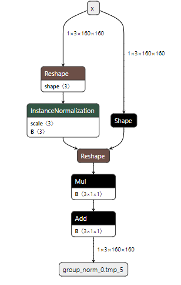

Icraft Demo: 自定义软算子#
在Icraft中， 如果一个算子无法映射到Icraft中算子，此时用户可以通过解析组件的自定义接口将算子解析到自定义算子上； 本章节阐述自定义算子放到CPU或GPU上运算的情况，即自定义软算子。
该Demo展示了如何使用自定义软算子流程来支持Onnx框架中的算子 GroupNorm，该算子定义如下：
1def GroupNorm(x, gamma, beta, G, eps=1e−5):
2 # x: input features with shape [N,C,H,W]
3 # gamma, beta: scale and offset, with shape [1,C,1,1]
4 # G: number of groups for GN
5 N, C, H, W = x.shape
6 x = tf.reshape(x, [N, G, C // G, H, W])
7 mean, var = tf.nn.moments(x, [2, 3, 4], keep dims=True)
8 x = (x − mean) / tf.sqrt(var + eps)
9 x = tf.reshape(x, [N, C, H, W])
10 return x ∗ gamma + beta
参数：
num_groups (int): 分组的数量，默认为1.eps (double): 为防止方差除零，增加一个很小的值。默认值：1e-05.gamma (params): scale.beta (params): offset.
Onnx格式中pattern：

一 工程配置#
1.1 文件结构#
在上面的工程结构中：
models存放的是示例模型的相关文件：groupnorm_network.py: PaddlePaddle框架上示例模型的源码，该模型只包含一个算子，即GroupNorm.groupnorm_network.onnx: PaddlePaddle框架上导出的示例模型，该模型保存为了.onnx格式.groupnorm_network.toml: Icraft编译示例模型的配置文件.images: 该文件夹存放了用于量化的图片.
op存放的是算子注册以及后端等接口实现的源文件，该源文件生成whatever.GroupNorm动态链接库.parse存放的是将框架算子解析到XIR的源文件，该源文件生成icraft.parse.groupnorm.dll动态链接库.tests存放的是测试的源文件，包含C++和Python版本的测试程序，C++源文件生成test_customop_softop可执行程序.
1.2 编译生成#
以上工程文件属于 Icraft-Demo 工程的一部分，具体的编译生成方法请参考 Icraft-Demo 的编译生成的说明。
二 适配流程#
2.1 尝试解析#
首先，调用 icraft parse 命令尝试解析示例模型文件 groupnorm_network.onnx , parse 命令的配置如下：
1[parse]
2net_name = "groupnorm_network"
3framework = "onnx"
4frame_version = "1.9"
5inputs = [ 1, 160, 160, 3]
6inputs_layout = "NHWC"
7pre_scale = "nop"
8pre_mean = "nop"
9pre_method = "resize"
10channel_swap = "nop"
11network = "../../samples/customop/softop/models/groupnorm_network.onnx"
12jr_path = "./json&raw/"
解析的命令如下：
# 进入build文件夹，避免生成的文件污染源目录
cd build/windows-x64-release
icraft parse ../../samples/customop/softop/models/groupnorm_network.toml
由于Icraft不支持模型中的算子 GroupNorm 的解析，因此解析会报如下错误：
please check the pre_check log, some ops are not supported!
[12/12/23 14:17:05.022] [E] 执行以下命令时捕获到错误码1:
icraft-parse.exe --channel_swap 0,1,2 --frame_version "1.9" --framework "onnx" --inputs 1,160,160,3 --inputs_layout "NHWC" --jr_path "./json&raw/" --net_name "groupnorm_network" --network "../../samples/customop/softop/models/groupnorm_network.onnx" --pre_mean "nop" --pre_method "resize" --pre_scale "nop"
根据提示，打开 .icraft\logs\groupnorm_network\groupnorm_network_precheck.csv ，其内容如下：
pattern_num |
start_index |
end_index |
inputs |
outputs |
op_serial |
|---|---|---|---|---|---|
0 |
2 |
2 |
p2o.Reshape.1 |
p2o.InstanceNormalization.1 |
InstanceNormalization |
以上信息表明，Icraft-Parser无法解析算子 InstanceNormalization ，因此我们需要利用Parser的自定义解析接口，将 InstanceNormalization 映射到Icraft XIR. 分析GroupNorm的pattern可知，
GroupNorm是一串小算子的组合，如果仅将InstanceNormalization解析为自定义算子，则在Icraft中是以小粒度的算子进行计算，执行效率较低，因此考虑将算子序列做为一个pattern，解析为一个自定义算子。
2.2 注册算子#
2.2.1 算子定义#
XIR中没有与 Reshape,InstanceNormalization,Shape,Reshape,Mul,Add 相对应的算子，因此我们需要自定义一个算子，将其注册到XIR中去。
该Demo在 samples/customop/softop/op/groupnorm.h 中完成了算子的定义和注册，该算子的命名空间为 whatever ，类名为 GroupNorm ，其生成的动态链接库的名字为 whatever.GroupNorm （Windows上文件名为 whatever.GroupNorm.dll , Linux上文件名为 libwhatever.GroupNorm.so ） 。
备注
用户可以根据需要对自定义算子的命名空间和类型随意取名，但是需要保证算子编译的动态链接库的名称为 {命名空间}.{类型名}。
根据前文框架上 GroupNorm 算子的定义，我们给该算子定义了四个属性，分别为 num_groups(int) 、 eps(double)、 gamma(Optional<Params>)、 beta(Optional<Params>). 该算子的具体定义和注册过程如下所示：
1// 命名空间
2namespace whatever {
3 using namespace icraft::xir;
4 class GroupNormNode : public OpNodeBase<GroupNormNode, OneResult> {
5 public:
6 int64_t num_groups;
7 double eps;
8 Optional<Params> gamma;
9 Optional<Params> beta;
10
11 ICRAFT_DECLARE_ATTRS(GroupNormNode) {
12 ICRAFT_ATTR_FIELD(num_groups);
13 ICRAFT_ATTR_FIELD(eps);
14 ICRAFT_ATTR_FIELD(gamma);
15 ICRAFT_ATTR_FIELD(beta);
16 }
17 };
18
19 class GroupNorm : public OpBase<GroupNorm, GroupNormNode> {
20 public:
21 GroupNorm() = default;
22
23 // 构造函数也可以不提供
24 GroupNorm(Value input, int64_t num_groups, double eps, Optional<Params> gamma = NullOpt, Optional<Params> beta = NullOpt) {
25 auto node = make_object<GroupNormNode>();
26 node->num_groups = num_groups;
27 node->eps = eps;
28 node->gamma = gamma;
29 node->beta = beta;
30 data_ = std::move(node);
31 addInput(input);
32 }
33 };
34
35 // 调用算子注册宏将算子注册到XIR
36 // 注册时可以使用set_tinfer为该算子添加类型推断函数
37 // 类型推断函数主要描述给定输入的类型，如何确定输出的类型
38 // 对于该算子，输出的类型和输入相同
39 ICRAFT_REGISTER_OP_NODE(GroupNormNode)
40 .set_tinfer<GroupNormNode, HostTarget>([](const auto* op) {
41 op->validate();
42 return Array<TensorType>{ op->inputs[0].tensorType().clone() };
43 });
2.2.2 组件接口#
算子定义完成后，还需要为算子实现前向等组件的接口。该Demo在 samples/customop/softop/op/groupnorm.cpp 中完成了以上接口的实现，具体如下：
1#include "groupnorm.h"
2
3 #include <icraft-xir/core/functor.h>
4 #include <icraft-xrt/dev/host_device.h>
5 #include <icraft-backends/hostbackend/backend.h>
6
7
8 namespace whatever {
9 using namespace icraft::xrt;
10 // 计算均值
11 double mean(const std::vector<double>& data) {
12 double sum = 0.0;
13 for (const auto& value : data) {
14 sum += value;
15 }
16 return sum / data.size();
17 }
18
19 // 计算方差
20 double variance(const std::vector<double>& data, double mean) {
21 double sum_squared_diff = 0.0;
22 for (const auto& value : data) {
23 double diff = value - mean;
24 sum_squared_diff += diff * diff;
25 }
26 return sum_squared_diff / data.size();
27 }
28
29
30 // HostBackend中定义了各个算子在CPU/GPU上前向的过程
31 // 下面向HostBackend中注册GroupNorm算子的前向过程
32 // 一个算子的前向实现包含init和forward两个接口，分别用于初始化以及前向过程
33 ICRAFT_ADD_OP_TO_BACKEND(GroupNorm, HostBackend)
34 // 初始化过程的实现
35 // 该算子不需要初始化什么，因此该函数为空
36 .set_init([](const GroupNorm& op, HostBackend backend) {})
37 // 前向实现，根据Softplus的计算公式实现计算过程
38 .set_forward([](const GroupNorm& op, const std::vector<Tensor>& inputs, HostBackend backend) -> std::vector<Tensor> {
39 auto num_groups = op->num_groups;
40 auto eps = op->eps;
41 auto& input_tensor = inputs[0];
42 auto& input_dtype = input_tensor.dtype();
43
44 bool input_is_fp32 = false;
45 if (auto stype = input_dtype.getStorageType(); stype.is<FloatType>()) {
46 auto float_dtype = stype.cast<FloatType>();
47 if (float_dtype.isFP32()) {
48 input_is_fp32 = true;
49 }
50 }
51 ICRAFT_CHECK(input_is_fp32).append("Only fp32 is supported!");
52 auto input_shape = input_dtype->shape;
53 auto num_channels = input_shape[1];
54 // 计算每个group的均值和方差
55 int hw_size = std::accumulate(input_shape.begin() + 2, input_shape.end(), 1, std::multiplies());
56 auto group_channel = num_channels / op->num_groups;
57 int group_size = group_channel * hw_size;
58 auto input_data = (float*)input_tensor.data().cptr();
59 auto output_tensor = Tensor(input_dtype).mallocOn(HostDevice::MemRegion());
60 auto output_data = (float*)output_tensor.data().cptr();
61 for (int i = 0; i < num_groups; ++i) {
62 int start_idx = i * group_size;
63 int end_idx = start_idx + group_size;
64
65 std::vector<double> group_data;
66 for (int j = start_idx; j < end_idx; ++j) {
67 group_data.push_back(input_data[j]);
68 }
69
70 double group_mean = mean(group_data);
71 double group_var = variance(group_data, group_mean);
72
73 // 对group中的元素进行标准化
74 if (op->gamma.has_value()) {
75 auto gamma = op->gamma.value().data<float>();
76 auto beta = op->beta.value().data<float>();
77 auto index = 0;
78 for (int j = start_idx; j < end_idx; ++j) {
79 auto c_index = i * group_channel + index;
80 output_data[j] = (input_data[j] - group_mean) * gamma[c_index] / std::sqrt(group_var + eps) + beta[c_index];
81 if (index >= group_channel) index = 0;
82 }
83 }
84 else {
85 for (int j = start_idx; j < end_idx; ++j) {
86 output_data[j] = (input_data[j] - group_mean) / std::sqrt(group_var + eps);
87 }
88 }
89 }
90 return { output_tensor };
91 });
92 }
2.2.3 编译链接#
算子的定义和一些组件接口实现完成后，我们需要将源码编译链接为动态链接库，相应的CMake脚本如下：
1cmake_minimum_required (VERSION 3.24)
2
3 add_library(whatever.GroupNorm SHARED "")
4
5 target_sources(whatever.GroupNorm PRIVATE
6 groupnorm.cpp
7 )
8
9 # 由于源文件中实现了HostBackend和量化的的接口，需要链接相应的库
10 # 整个实现中还使用了XIR和XRT的接口，但是二者已经被Icraft::HostBackend公开链接，因此可以不写
11 # 完整的写法为 target_link_libraries(whatever.GroupNorm PRIVATE Icraft::HostBackend Icraft::XRT Icraft::XIR)
12 target_link_libraries(whatever.GroupNorm PRIVATE Icraft::HostBackend)
以上脚本在Windows下编译生成 whatever.GroupNorm..dll 文件，在Linux下生成 libwhatever.GroupNorm.so 文件，其包含了算子的定义、HostBackend等接口的实现。
2.3 自定义解析#
算子注册完成后，需要利用自定义解析的接口完成Onnx框架上 Reshape,InstanceNormalization,Shape,Reshape,Mul,Add 算子到XIR中 whatever::GroupNorm 算子的转换。
该Demo在 samples/customop/softop/parse 文件夹下的 parser.cpp 中完成了自定义解析的实现，具体如下：
1#include <icraft-xir/ops/transpose.h> 2 #include <icraft-onnx/ox_pattern_factory.h> 3 #include "../op/groupnorm.h" 4 5 using namespace icraft::parser::ox; 6 using namespace icraft::xir; 7 8 std::shared_ptr<float[]> getParamData(onnx::NodeProto node) { 9 onnx::TensorProto tensor; 10 if (node.op_type() != "Parameter") 11 tensor = node.attribute(0).t(); 12 else 13 tensor = node.attribute(0).tensors(0); 14 15 auto dim_tmp = tensor.dims(); 16 std::vector<int> dim_(dim_tmp.begin(), dim_tmp.end()); 17 auto size_ = std::accumulate(dim_.begin(), dim_.end(), 1, std::multiplies()); 18 auto data = std::shared_ptr<float[]>(new float[size_]); 19 if (tensor.raw_data().size() != 0) { 20 auto flt = (float*)node.attribute(0).t().raw_data().data(); 21 std::memcpy(data.get(), flt, size_*sizeof(float)); 22 } 23 return data; 24 } 25 26 static auto parse = [](std::vector<onnx::NodeProto>& pattern_nodes, std::map<std::string, onnx::TensorProto*>& coef_map, 27 std::map<std::string, onnx::NodeProto>& const_node_map, std::map<std::string, Value>& tensor_map) { 28 std::vector<icraft::xir::Operation> ops; 29 auto input_name = pattern_nodes[0].input(0); 30 auto output_name = pattern_nodes[5].output(0); 31 auto ins_norm_node = pattern_nodes[1]; 32 auto mul_node = pattern_nodes[4]; 33 auto add_node = pattern_nodes[5]; 34 float eps = 0.00001; 35 for (auto attr : ins_norm_node.attribute()) { 36 if (attr.name() == "epsilon") eps = attr.f(); 37 } 38 //input的layout分为：NHWC和框架原始排布，GroupNorm要求input的layout为框架排布 39 //当input.tensorType()->layout == Layout::NHWC()时，需要添加transpose算子将input的layout调整为框架排布 40 auto input = tensor_map.at(input_name); 41 if (input.tensorType()->layout == Layout::NHWC()) { 42 auto transpose_name = output_name + "_transpose"; 43 auto transpose = Transpose(input.clone(), {0,3,1,2}, Layout("***C")); 44 ops.push_back(transpose); 45 input = transpose[0]; 46 } 47 48 auto channel = input.tensorType()->shape[1]; 49 auto gamma_type = TensorType(FloatType::FP32(), { channel }, Layout::Init().O()); 50 auto gamma_name = mul_node.input(1); 51 auto gamma_node = const_node_map[gamma_name]; 52 auto gamma_data = getParamData(gamma_node); 53 auto beta_name = add_node.input(1); 54 auto beta_node = const_node_map[beta_name]; 55 auto beta_data = getParamData(beta_node); 56 auto gamma = Params(gamma_type); 57 gamma.setData(gamma_data); 58 auto beta_type = TensorType(FloatType::FP32(), { channel }, Layout::Init().O()); 59 auto beta = Params(gamma_type.clone()); 60 beta.setData(beta_data); 61 auto group_norm = whatever::GroupNorm(input, 1, eps, gamma, beta); 62 auto gamma_data_tmp = group_norm->gamma.value().data<float>(); 63 group_norm.inferResults({ input.tensorType().clone() }); 64 group_norm[0].setName(output_name); 65 ops.push_back(group_norm); 66 67 return ops; 68 }; 69 ICRAFT_ADD_PATTERN_TO_PARSER("Reshape,InstanceNormalization,Shape,Reshape,Mul,Add").set_parse(parse);
备注
解析 .onnx 格式文件需要用到 protobuf ，目前仅支持请支持 protobuf3.21 ，请自行 编译安装protobuf3.21。
最后，将以上源文件生成动态链接库：
1cmake_minimum_required (VERSION 3.24) 2 3 #protobuf的安装路径 4 set(PROTC_PACKAGE_PATH "C:/Program Files") 5 set(CMAKE_PREFIX_PATH ${PROTC_PACKAGE_PATH}/protobuf) 6 message(STATUS "CMAKE_PREFIX_PATH: " ${CMAKE_PREFIX_PATH}) 7 find_package(protobuf CONFIG REQUIRED) 8 9 add_library(icraft.parse.groupnorm SHARED "") 10 11 target_sources(icraft.parse.groupnorm PRIVATE 12 parser.cpp 13 onnx.proto3.pb.cc 14 ) 15 16 target_link_libraries(icraft.parse.groupnorm PRIVATE Icraft-Onnx-Opset11Lib protobuf::libprotobuf)
以上脚本在Windows下编译生成 icraft.parse.groupnorm.dll 文件。
2.4 再次解析 (编译)#
再次解析之前需要让Icraft能够找到以上生成的 whatever.GroupNorm.dll 和 icraft.parse.groupnorm.dll ，有两种方法：
【不推荐】将以上生成的动态链接库复制到
C:\Icraft\CLI\bin文件夹下。【☆推荐】设置环境变量
ICRAFT_CUSTOM_DIR，指向以上动态链接库所在的文件夹。比如在Windows下，可以使用PowerShell命令$env:ICRAFT_CUSTOM_DIR="path/to/dll/dir"来实现，如果用户网络还需要用到Icraft提供的customop，可以使用命令$env:ICRAFT_CUSTOM_DIR="path/to/dll/dir;C:\Icraft\CustomOp_v3.0.0"将Icraft Customop的路径一并配置到ICRAFT_CUSTOM_DIR。
然后再次尝试解析、优化、量化和指令生成等编译过程。
各个编译过程的配置如下：
1[parse]
2 net_name = "groupnorm_network"
3 framework = "onnx"
4 frame_version = "1.9"
5 inputs = [ 1, 160, 160, 3]
6 inputs_layout = "NHWC"
7 pre_scale = "nop"
8 pre_mean = "nop"
9 pre_method = "resize"
10 channel_swap = "nop"
11 network = "../../samples/customop/softop/models/groupnorm_network.onnx"
12 jr_path = "./json&raw/"
13
14 [optimize]
15 target = "BUYI"
16 json = "./json&raw/groupnorm_network_parsed.json"
17 raw = "./json&raw/groupnorm_network_parsed.raw"
18 jr_path = "./json&raw/"
19
20 [quantize]
21 forward_mode = "image"
22 saturation = "kld"
23 forward_dir = "../../samples/customop/softop/models/images/"
24 forward_list = "../../samples/customop/softop/models/images/pic_list.txt"
25 bits = 8
26 json = "./json&raw/groupnorm_network_optimized.json"
27 raw = "./json&raw/groupnorm_network_optimized.raw"
28 jr_path = "./json&raw/"
29 per = "tensor"
30 target = "buyi"
31
32 [adapt]
33 target = "BUYI"
34 json = "./json&raw/groupnorm_network_quantized.json"
35 raw = "./json&raw/groupnorm_network_quantized.raw"
36 jr_path = "./json&raw/"
37
38 [generate]
39 json = "./json&raw/groupnorm_network_adapted.json"
40 raw = "./json&raw/groupnorm_network_adapted.raw"
41 jr_path = "./json&raw/"
编译的命令如下：
# 进入build文件夹，避免生成的文件污染源目录
cd build/windows-x64-release
icraft compile ..\..\samples\customop\softop\models\groupnorm_network.toml
三 仿真对比#
为了验证自定义软算子的正确性，我们对解析后的网络和指令生成后的网络进行仿真对比结果。因为 ``GroupNorm``为自定义软算子，采用CPU作为后端，相比于浮点计算，是没有精度损失的。 由于自定义激活使用定点查找表实现，相比于浮点计算是有精度损失的，因此我们计算两个阶段网络仿真结果的余弦相似度，若其大于0.999则认为结果正确。
该Demo在 samples/customop/softop/tests/test.cpp 中调用Icraft的C++ API完成了结果验证，主要实现如下：
1try {
2 std::random_device rd;
3 std::default_random_engine eng(rd());
4 std::uniform_real_distribution<> distr(-1000.f, 1000.f);
5
6 const char* PARSED_JSON_FILE = "json&raw/groupnorm_network_parsed.json";
7 const char* PARSED_RAW_FILE = "json&raw/groupnorm_network_parsed.raw";
8
9 const char* GENERATED_JSON_FILE = "json&raw/groupnorm_network_quantized.json";
10 const char* GENERATED_RAW_FILE = "json&raw/groupnorm_network_quantized.raw";
11
12 // 加载解析后的网络
13 auto parsed_network = Network::CreateFromJsonFile(PARSED_JSON_FILE);
14 parsed_network.loadParamsFromFile(PARSED_RAW_FILE);
15
16 // 加载指令生成后的网络
17 auto generated_network = Network::CreateFromJsonFile(GENERATED_JSON_FILE);
18 generated_network.loadParamsFromFile(GENERATED_RAW_FILE);
19
20 // 构造一个随机Tensor
21 auto input_tensor = Tensor(TensorType(FloatType::FP32(), { 1, 160, 160, 3 }, Layout("NHWC")));
22 input_tensor.mallocOn(HostDevice::MemRegion());
23 input_tensor.fill<float>([&](auto i) { return distr(eng); });
24
25 // 仿真以上两个网络，获取输出
26 auto parsed_output = Sim(parsed_network, input_tensor);
27 auto generated_output = Sim(generated_network, input_tensor);
28
29 // 获取输出信息，计算余弦相似度
30 auto parsed_dtype = parsed_output.dtype();
31 auto num_elements = parsed_dtype.numElements();
32
33 auto parsed_data = (float*)parsed_output.data().cptr();
34 auto generated_data = (float*)generated_output.data().cptr();
35
36 auto cosine_sim = CosineSimilarity(parsed_data, generated_data, num_elements);
37
38 ICRAFT_LOG(INFO).append("cosine similarity: {}", cosine_sim);
39
40 assert(cosine_sim == 1);
41 }
42 catch (std::exception& e) {
43 std::cout << e.what() << std::endl;
44 }
调用C++ API完成结果验证的测试命令如下：
# 进入build文件夹，避免生成的文件污染源目录
cd build/windows-x64-release
.\test_customop_softop.exe
该Demo在 samples/customop/activate/tests/test.py 中调用Icraft的Python API完成了结果验证，主要实现如下：
1PARSED_JSON_FILE = "json&raw/groupnorm_network_parsed.json"
2 PARSED_RAW_FILE = "json&raw/groupnorm_network_parsed.raw"
3
4 GENERATED_JSON_FILE = "json&raw/groupnorm_network_BY.json"
5 GENERATED_RAW_FILE = "json&raw/groupnorm_network_BY.raw"
6
7 # 加载解析后的网络
8 parsed_network = Network.CreateFromJsonFile(PARSED_JSON_FILE)
9 parsed_network.loadParamsFromFile(PARSED_RAW_FILE)
10
11 # 加载指令生成后的网络
12 generated_network = Network.CreateFromJsonFile(GENERATED_JSON_FILE)
13 generated_network.loadParamsFromFile(GENERATED_RAW_FILE)
14
15 # 构造一个随机Tensor
16 random_data = np.random.randn(1, 160, 160, 3).astype(np.float32)
17 input_tensor = Tensor(random_data, Layout("NHWC"))
18
19 # 仿真以上两个网络，获取输出
20 parsed_output = Sim(parsed_network, input_tensor)
21 generated_output = Sim(generated_network, input_tensor)
22
23 # 获取输出信息，计算余弦相似度
24 cosine_sim = ConsineSimilarity(parsed_output, generated_output)
25
26 print("cosine similarity: {}".format(cosine_sim))
调用Python API完成结果验证的测试命令如下：
# 进入build文件夹，避免生成的文件污染源目录
cd build/windows-x64-release
python ../../samples/customop/softop/tests/test.py